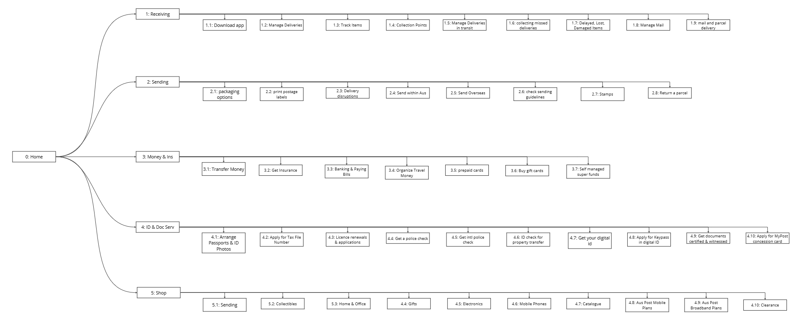
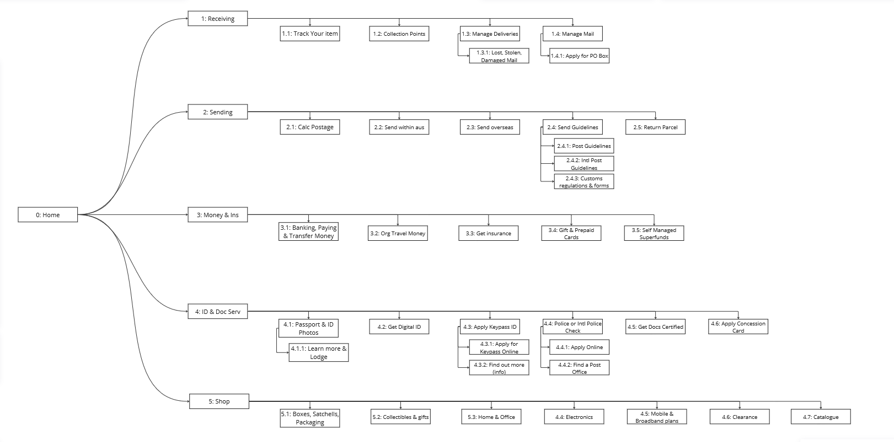
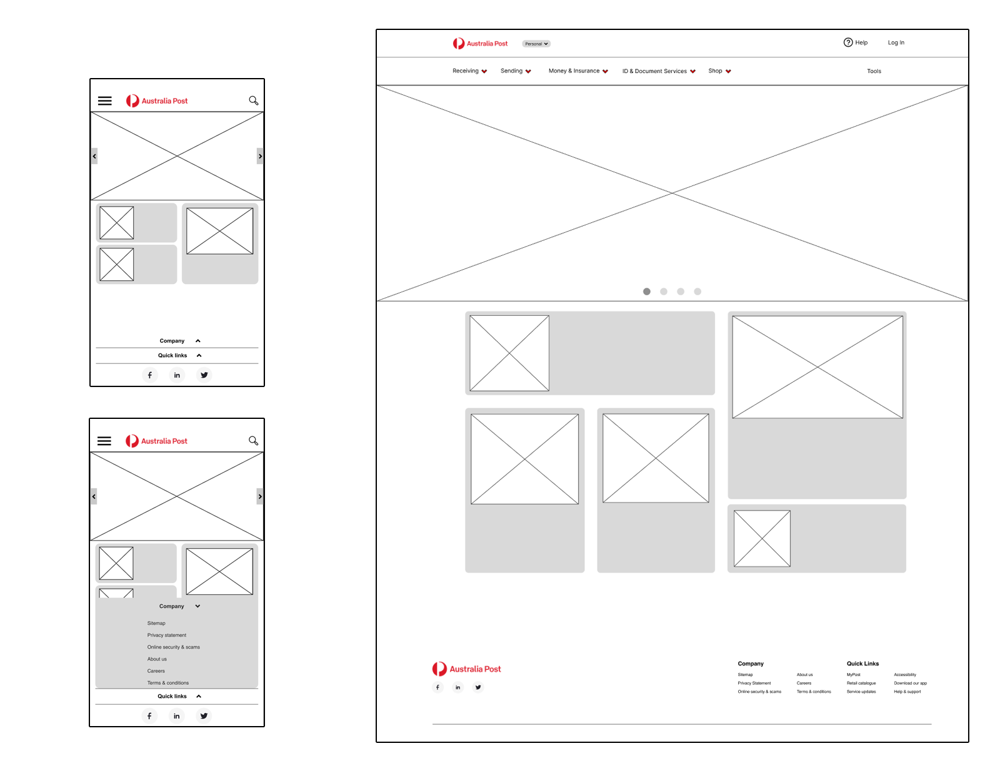
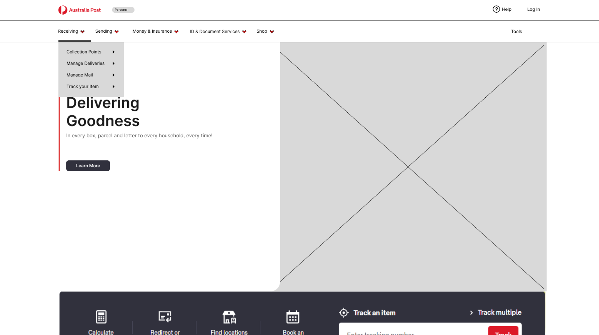
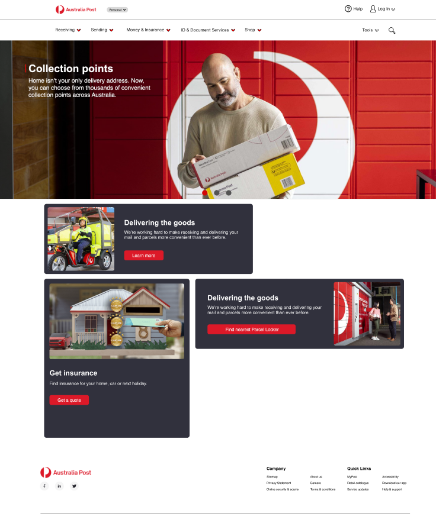

I started this project inspired to create a better solution after experiencing my own problems with Australia Post, i wanted to examine ways to improve the service and make it more friendly to a wider range of people that use the service. Through research, i discovered that the problem in the first place is the website being far too cluttered with far too many options, making it difficult to find what one requires.
Redesign the Australia Post website to be more user friendly and minimizing the amount of options to reduce confusion.
The amount of overwhelming links and pages for a majority of information is creating alot frustrations for users trying finding the information they require, taking alot of time to spend looking for what they need.
For this project i validated the need to re-design the website and leveraged data from the research to create a condensed, comprehensible website service catering to the users needs.

Below are the areas i'd like to explore during the user research
I want to understand:
• Why the users approach/behave the way they do on the website
• What problems they face on a daily basis and why
• How can we condense the information and make it easy to locate and understand
Something descriptive goes here
• Card Sorting
• Usability Testing
• Concept Testing
• Wireframing
• User Research
• Prototyping
• Affinity Diagramming
• Iterative Testing & Feedback
From the initial research, i learned just how many users view the website for information regarding legal documents (Tax File Numbers, Police Check ect) and insurance, usually browsing longer than necessary for what information they need. This led me to discover that what would help the users get onto the right information, so i could condense it down into easily digestible content.
After i compiled the results from the research into the affinity map, i was able to create a persona that represents the main user group i am targeting.

Users are struggling to find the information and relevant documentation within the Australia Post website, while the documentation is there, it is sometimes scattered over more than 2 pages.
How can we assist them to get the relevant information they need without much effort.
Users are struggling to find the information and relevant documentation within the Australia Post website, while the documentation is there, it is sometimes scattered over more than 2 pages.
I beleive that by condensing down the content into shorter, more easily understandable parts will not only assist the user, but also reduce the amount of links required for the website, simplifying it.
The current sitemap for Australia Post is cluttered to put it short, many of the options they present can be condensed down instead of being sprawled out, below, i have mapped out the original site map for the navigation bar:
While on paper this does not seem like alot of options, how they are laid out in the navigation bar from the average users perspective pointed out that there are far too many navigation options, especially for some content spread over multiple pages.
I did some initial research into the website to see what kind of task flow was currently in use, after the research and checking the data, the task flow was left alone, as the tasks users were doing had not changed, rather the website just needed a restructure.
Based on information from the card sorting, i designed a simple map re-categorizing and organizing the website
Organizing the website into this sitemap simplifies all the content and pages into a cohesive layout, with this complete it helped create a plan of attack for the wireframes going forward.
The first version of lo-fi wireframes allowed me to run usability tests and discover fixes and priorities that need to be implemented as soon as possible. By doing this, it decreased the number of iterations for later revisions towards the hi-fidelity version of the website.
The version below is just before initial testing with iterations made afterwards
I created a UI Kit that keeps the traditional Australia Post look but also adding some small changes to simplify and tidy up the website.

The biggest changes with the UI Style is the colour accents for the input form boxes and using universal icons that are used across alot across the web, some minor changes were made to the colour pallet to reduce the amount of colours being used for accents, making it easier to be cohesive across the whole site.
Using Figma i created a prototype to test out the restructured navigation for the website, which not only used the new condensed format but also removed all the "Buy Online" links from every drop down menu as it was making them needlessly bigger than what they should be and did not make sense because the online Shop link was right in the navigation bar in the first place.
This was put through a short testing phase to ensure that it had the intended effect for users, results were good and hit expectations, i then moved onto the Hi-Fi Prototype.
Continuing to use figma, i created a Hi-Fi Prototype of what the redesign could look like.

The biggest challenge was trying to think of good ways to organize home page content, the content boxes by all means are not the best idea, but used sparingly could be used to great effect, i made a small minor iteration to try and make better use of the content space.
Using less content boxes helped balance the page better overall, but due to a time limit placed on the body of work i was unable to refine the design further, this is something i would like to refine at a later date, and also investigate ways to condense down navigation links even further.
While working on this project i learned that research and testing is really paramount to working towards the final product that with the best outcome for as many users as possible. Of course its not possible to 100% satisfy everyones wants and needs but even a 10% improvement is much welcome. I learned to not get too hung up on setting the design out in a specific way and to be flexible in the ways of solving the problem. In terms of this project, i beleive that slimming down the myriad of options and condensing the information is fixing the problem at the core.